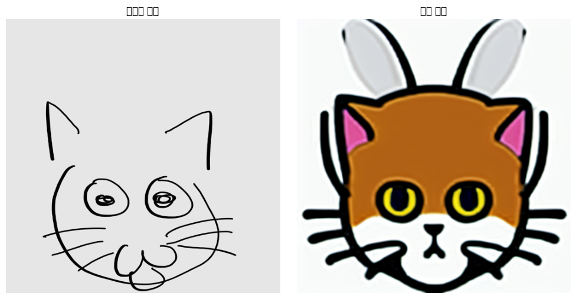
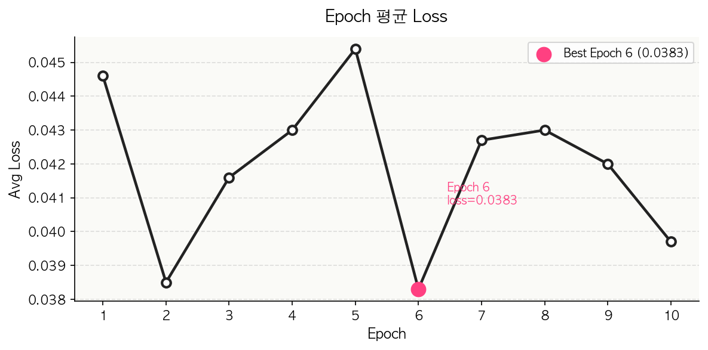

개요

손그림 스케치를 twemoji 스타일 동물 이모티콘으로 변환한 결과
Stable Diffusion v1.5의 UNet에 diffusers/PEFT 네이티브 LoRA를 파인튜닝하고, ControlNet(scribble)으로 손그림의 원본 구도를 유지하며 twemoji 스타일 동물 이모티콘을 생성합니다. 데이터셋 정제부터 M1 Mac(MPS)에서의 LoRA 학습, Streamlit 앱 구현까지 전부 혼자 진행했습니다.
학습 성능

Epoch별 평균 Loss 곡선
구현 포인트
- 손그림 전처리 — 정방형 패딩 + 이진화(흑백)로 ControlNet에 최적화된 입력 생성
- LoRA 파인튜닝 — PEFT 네이티브 포맷으로 여러 epoch 학습, 최종적으로 epoch 7 채택
- Apple Silicon 대응 — `torch.backends.mps` 자동 감지, `PYTORCH_ENABLE_MPS_FALLBACK=1`로 M1 환경 학습
- 학습 리포트 — Streamlit 멀티페이지로 학습 곡선·EDA·가중치 분석·생성 품질 비교 제공
기술 스택
| 영역 | 사용 기술 |
|---|---|
| 생성 모델 | Stable Diffusion v1.5(runwayml/stable-diffusion-v1-5) · ControlNet(lllyasviel/sd-controlnet-scribble) |
| 파인튜닝 | diffusers + PEFT 네이티브 LoRA |
| 프레임워크 | PyTorch · torchvision · accelerate · safetensors |
| 앱 | Streamlit(학습 리포트 · 그래프 · EDA · 가중치 분석 · 생성 품질 멀티페이지) |
트러블슈팅
| 문제 | 원인 | 해결 |
|---|---|---|
학습 중 loss가 nan으로 발산 |
M1 Mac(MPS)에서 fp16(half precision)으로 LoRA를 학습하면 수치 불안정으로 loss가 nan이 됨 | 정밀도를 fp32로 강제 전환해 학습 안정화. GPU 메모리 여유가 없는 M1 환경 특성상 batch_size=1로 병행 조정 |
| MPS에서 일부 연산 미지원 오류 | PyTorch MPS 백엔드가 일부 연산자를 아직 구현하지 않아 런타임 에러 발생 | PYTORCH_ENABLE_MPS_FALLBACK=1 환경변수로 미지원 연산만 CPU로 자동 폴백하도록 처리 |